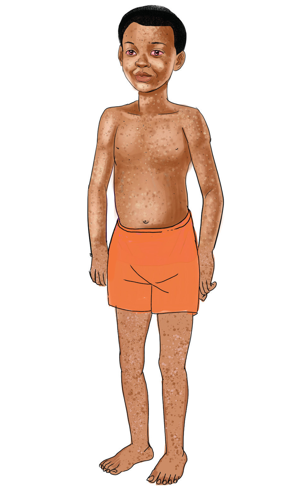

Surua
Ugonjwa wa surua husababishwa na virusi ambavyo hushambulia zaidi watoto wadogo. Ugonjwa huu huenezwa kwa njia ya hewa hasa mgonjwa anapokohoa au kupiga chafya. Maambukizi hutokea haraka sana sehemu zenye msongamano wa watu.
Dalili za surua
Dalili za surua ni mafua na homa kali kwa muda wa siku tatu hadi nne. Vilevile, kuharisha, kutapika, kupata vipele vidogovidogo usoni na baadaye kuenea mwilini. Aidha, dalili nyingine ni macho kuwa mekundu na kukohoa. Ugonjwa huu hudhibitiwa kwa watoto wachanga kupatiwa chanjo. Kielelezo namba 4 kinaonesha mgonjwa mwenye vipele mwilini kutokana na ugonjwa wa surua.

Kielelezo namba 4: Mgonjwa wa surua